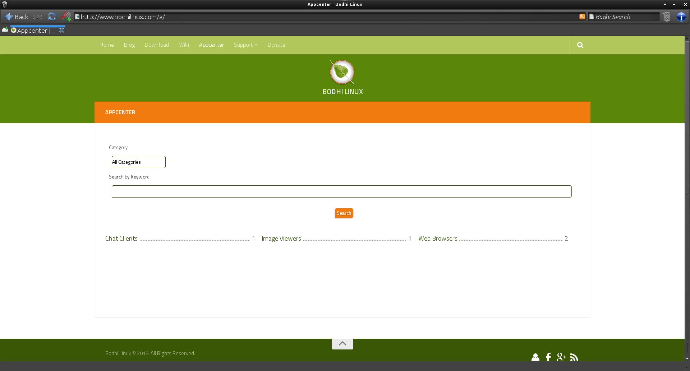

[click on any image to enlarge]
In most cases, you will want to have an Internet connection
established to install software in Bodhi Linux.
Please follow this link if you need assistance
Connecting to the
Internet.
Updating System
The first thing to do after establishing an internet connection is to update your system.
There are multiple methods to achieve this, but
the simplest method can be done by opening the LXTerminal application, located in Main Menu>Applications>Accessories,
and running this command:
sudo apt-get update && sudo apt-get -y dist-upgrade
Note: This command relies on the apt-get command-line tool and can be done any time you want to update your system(apps & all) to the newest versions possible.
Bodhi Linux AppCenter
{kind=link}
The Bodhi Linux team has created the AppCenter as a very fast and simple way to install many common applications. While you won't find every application that you can install in Bodhi Linux at the AppCenter, you will find what we consider to be "best of breed" applications for each particular category.
The Bodhi Linux AppCenter is designed to work best with Midori, Bodhi's default web browser. It also provides several application-sets( a.k.a. meta-packages) that provide common applications and/or are chosen to meet a particular use case. Read about each to find out what they have to offer!
Here's a quick tutorial on how to install applications at the Bodhi Linux AppCenter:
-
Find your application.
If you already know the name of the application you wish to install, just type it in the search bar in the top right.
If not, simply browse through the categories listed on the front page. -
Navigate to the page.
For either method you choose to find your application you will be presented with a link.
Each application has its own page with a description of the application and a screenshot of it. -
Install it!
There are 3 methods of installing to choose from:
- Install Now
This is the most commonly used method to install an application from the Bodhi Linux AppCenter. Simply click the "Install Now" button and enter your password when you are prompted for it. That's it! Your application and all of its dependencies will be automatically installed.
- Download
This method allows you to downloand an application and all of its dependencies in one neat package. Many users find this useful to download the package from a machine with a fast Internet connection to install on another machine that has no (or slow) Internet connection.
Complete directions for this method are not covered here, but can be found at the Bodhi Linux AppCenter. - Quick Install
This method functions faster than the prior two, but it is not recommended unless at least one package has already been installed with the "Install Now" method, since the "Install Now" method also resynchronizes the package index files from their sources. To paraphrase, "Install Now" updates (not upgrades) all packages to their newest versions and installs the selected package. Quick Install only does the latter.
- Install Now
Links (require an internet connection)
The Bodhi Linux AppCenter
Complete Installation Instructions at the AppCenter
Synaptic Package Manager
The
Synaptic Package Manager, common to all
Debian GNU/Linux
based distributions, is not installed in
Bodhi Linux
by default. To install it click the icon/link below or use sudo apt-get install synaptic from the command line.

To access it, go to Main Menu>Applications>Preferences>Synaptic Package Manager.
With Synaptic Package Manager, you have access to all of the applications in the Bodhi Linux and Ubuntu 12.04 repositories. (A repository is the server(s) where Linux distributions make applications available for you to install.)
Please see the Bodhi Linux Doc Wiki for complete instructions on using Synaptic Package Manager.
Links (internet connection required):
The Bodhi Linux Doc Wiki
Synaptic
on the Doc Wiki
apt-get & dpkg (advanced)
The command-line tools apt-get and dpkg
are the "backend" to the above mentioned methods of installing
applications. Advanced users may feel free to use these tools from the
command line, but their use is beyond the scope of this document.
man apt-get
or
man dpkg
for the manual of the respective command.
Installation from source code is readily available for advanced users, as well.
Ex. Installing Language Packs
Note: These examples only cover installing
the language packs. To change the system language to the language pack you've just installed, go
here.
To install a language pack using the Bodhi Linux AppCenter, simply go to Main Menu>Bodhi Linux>Adding Software. This will open your default web-browser (Midori on a fresh Bodhi installation) to the Appcenter's webpage. Now, scroll down to the Extra section. There, you will see Language Packs. Click to view the available language packs Bodhi currently maintains. After you click the one you want, simply use one of the three methods described above to install it, whether it be Install Now, Download, or Quick Install.
To install a language pack using the Synaptic Package Manager, go to Main Menu>Applications>Preferences>Synaptic Package Manager. It will prompt you for your password. Type it in, and press enter. When it opens, click the Reload button in its toolbar. This will update all packages to their latest version so that the packages you install will be at their newest. Once it is done, search for "bodhi language" using the search bar at the top. This will show the available bodhi-language packages. Right-click the one you would like, and select Mark for Installation. Go ahead and click the Apply button in the toolbar. A popup will show you what will be installed, how much space it will occupy, and it will ask you to click Apply to confirm installing the selected language pack. Once that is clicked, it will begin installing the package and notify you once it is complete.
To install a language pack using the apt-get command, you will need to know the exact name of the package you wish to install. If you know its name, good for you, but we will still be demonstrating how to find out its name, regardless:
To find a package's name:
-
Open LXTerminal, Bodhi Linux's default terminal, at
Main Menu>Applications>Accessories.
-
Use the command:
apt-cache search "[keywords]".
In this case, the keywords would be "bodhi language".
It should look like this:apt-cache search "bodhi language". -
The language packs will be visible, names and all. Do not close the terminal just yet.
To install the package:
-
In the open LXTerminal window, use the command:
sudo apt-get install -y [package-name].
For this example, the package name will be bodhi-language-fr (french language pack).
It should look like this:sudo apt-get update && sudo apt-get install -y bodhi-language-fr. -
After pressing enter, a flood of text describing what the command is doing will come raining down. You will have to wait a tad.
-
When you are back to the user@computer prompt, the installation is complete.